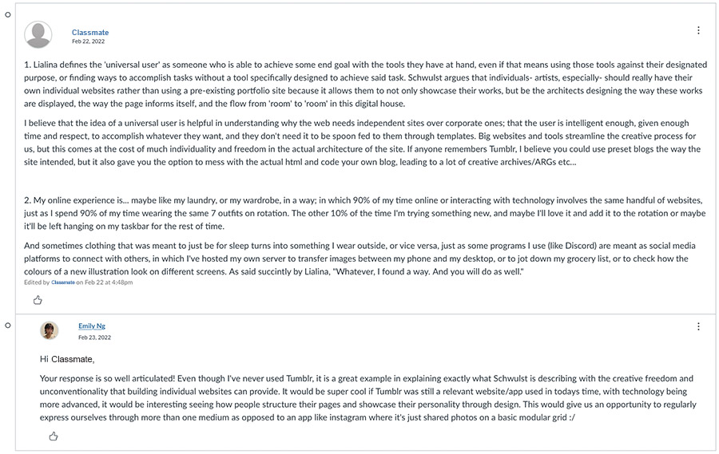

Reading I: Turing Complete User by Olia Lialina
Reading II: My website is a shifting house next to a river of knowledge. What could yours be? by Laurel Schwulst
What do you think of Lialina’s definition of the universal user?
Lialina's definition of the universal user describes a more creative, individualistic, and free way of expressing oneself on the internet. She criticizes the way apps are developed with the "busy person" in mind, therefore creating different applications to perform specific tasks, making it accessible for quickly completing repetitive tasks, but eliminating the aspect of individual creativity. This applies to the previous discussion post about the standard use of adobe programs and apple products for designers; limiting designers to a type of design process and way of working with the "standard" applications and technology. I think Lialina's category of the universal user is useful for understanding Schwulst's argument advocating for individual websites over platforms. Her idea draws parallel to Schwulst's idea of creativity being in the hands of individual creatives as opposed to big corporate developers such as Facebook, twitter, and instagram and Snapchat. Schwulst explains that "universally popular social media sites...prioritize advertising above their users’ needs. Their users’ happiness is not the primary focus".
What kind of computer user are you?
In terms of Lialina's text, I don't think I am a universal user, but I would like to work towards that idea. When she stated, "For instance, you can decide not to use Twitter at all and instead inform the world about your breakfast through your own website. You can use Live Journal as if it is Twitter, you can use Twitter as Twitter, but instead of following people, visit their profiles as you’d visit a homepage," I thought to myself "that sounds very inconvenient and too much work." I have assimilated into the apps and media provided to do what they were designed to. I do find that there is a block in terms of accessing your own imagination and creativity when using these apps, which is why I want to step out of that mindset and explore other ways I can use programs. My user experience is very similar to the way a river works, wherein the stream simply carries me to the destination without working for it or finding my own unique path to the destination.
Response to a Classmate
Reading: In Free Fall: A Thought Experiment on Vertical Perspective by Hito Steyer
A major theme that runs throughout Steyerl’s essay is that of surveillance. In your own words, define surveillance and discuss how the notion of a “vertical” or aerial perspective lends itself to a culture of surveillance according to Steyerl’s thought experiment.
Surveillance, as I understand it in accordance to this article, is about observation, monitoring, and spying especially from aerial views in which individuals are always being surveilled either knowingly and unknowingly. Within this modern time and age we are constantly being surveilled by media, security cameras, as well as those in higher power. With these thoughts in mind, the notion of a vertical or aerial perspective lends itself in support to social structures and power dynamics. The culture of surveillance benefits those who have the ability and privilege to surveil, therefore leaving those with only linear views at a disadvantage of feeling lost and observed. As mentioned in the text, Eyal Weizman who has analyzed verticality in political architecture, he describes this situation as "the spatial turn of sovereignty and surveillance in terms of a vertical 3D sovereignty." He gives the example of how "occupation of the skies therefore acquires a critical importance, since most of the policing is done from the air." (in the last paragraph of subhead "Acceleration"). This relates to how much of powerful surveillance from higher levels of verticality comes from military but the imagery of aerial views as well flows into all other aspects of modern life such as entertainment. This phenomenon of verticality has since disrupted the notion of linear life and has given us more possibilities and understandings of how we can live life, and what it means to live in time and space.